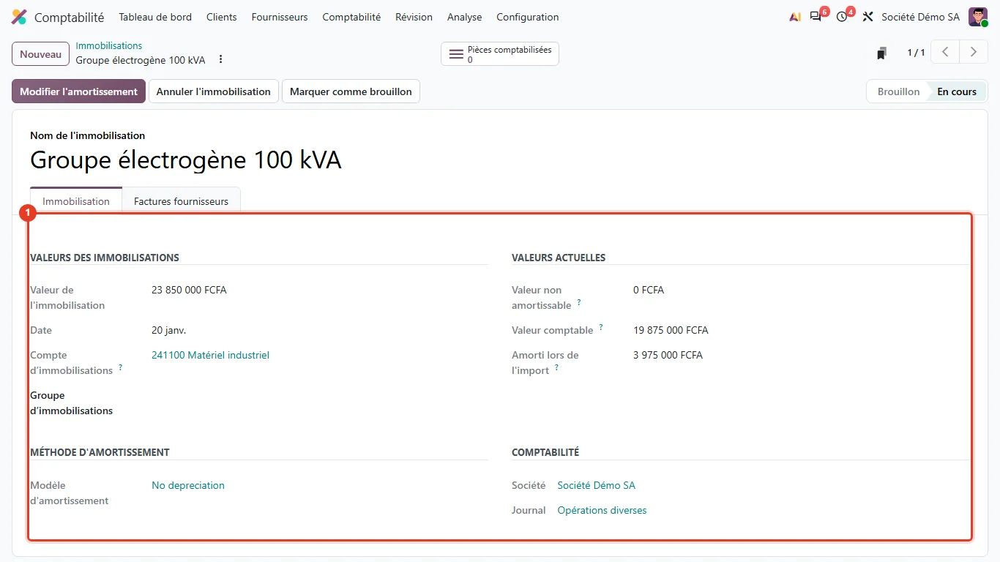

Comptabiliser les dotations aux amortissements
Objectif. Enregistrer chaque mois les dotations calculées par Odoo.
Menu Odoo 15Comptabilité > Comptabilité > Immobilisations
Étapes
- Ouvrez une immobilisation confirmée : l'onglet d'amortissement (1) montre les dotations prévues.
- Odoo crée les dotations en brouillon à chaque échéance.
- Dans Pièces comptables, filtrez le journal des immobilisations et la période.
- Contrôlez, puis faites Comptabiliser par le validateur.

À vérifier
- Les dotations du mois sont comptabilisées avant l'édition de la balance.
- Les comptes 28 progressent du montant des dotations.
À éviter
- Ne passez pas les dotations à la main en opération diverse : elles seraient comptées deux fois.
Exercice
Comptabilisez les dotations du mois et contrôlez le compte 28.